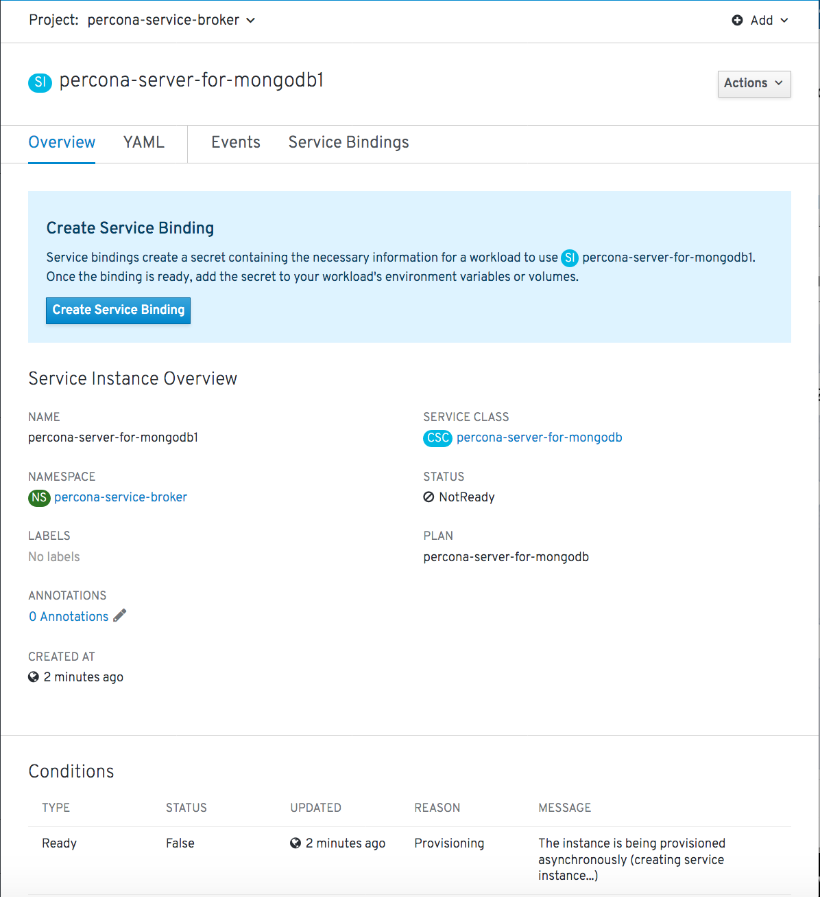

Deploy Percona server for MongoDB with Service Broker
Percona Service Broker provides the Open Service Broker object to facilitate the operator deployment within high-level visual tools. Following steps are needed to use it while installing the Percona Server for MongoDB on the OpenShift platform:
The Percona Service Broker is to be deployed based on the
percona-broker.yamlfile. To use it you should first enable the Service Catalog, which can be done as follows:$ oc patch servicecatalogapiservers cluster --patch '{"spec":{"managementState":"Managed"}}' --type=merge $ oc patch servicecatalogcontrollermanagers cluster --patch '{"spec":{"managementState":"Managed"}}' --type=merge
When Service Catalog is enabled, download and install the Percona Service Broker in a typical OpenShift way:
$ oc apply -f https://raw.githubusercontent.com/Percona-Lab/percona-dbaas-cli/broker/deploy/percona-broker.yaml
Note
This step should be done only once; the step does not need to be repeated with any other Operator deployments. It will automatically create and setup the needed service and projects catalog with all necessary objects.
Now login to your OpenShift Console Web UI and switch to the percona-service-broker project. You can check its Pod running on a correspondent page:

Now switch to the Developer Catalog and select Percona Kubernetes Operator for MongoDB:

Choose
Percona Kubernetes Operator for Percona Server for MongoDBitem. This will lead you to the Operator page with the Create Service Instance button.Clicking the Create Service Instance button guides you to the next page:

The two necessary fields are Service Instance Name and Cluster Name, which should be unique for your project.
Clicking the Create button gets you to the Overview page, which reflects the process of the cluster creation process:
You can also track Pods to see when they are deployed and track any errors.